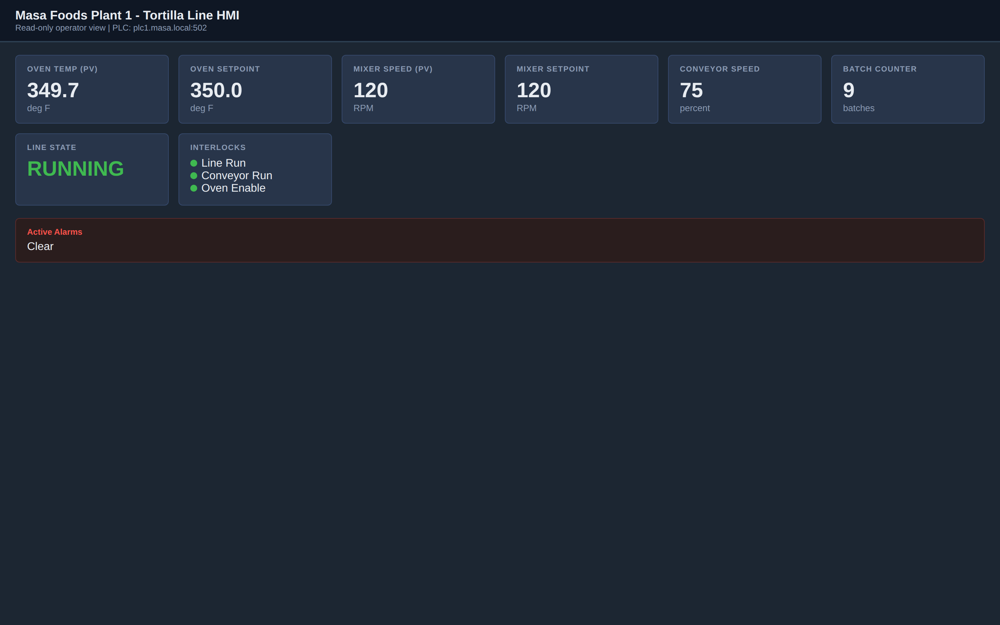
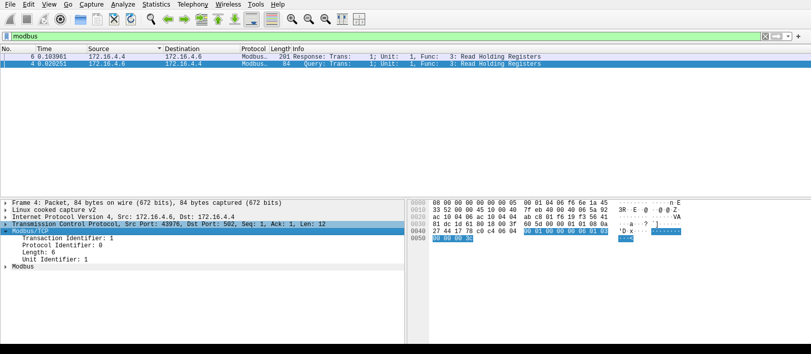

Exercise ICSPT-3.2: Register Map Reconstruction
Engagement Status
| Client | Masa Foods, Inc. (fictional) |
|---|---|
| Role | OT Security Engineer, Plant 1 |
| Phase | Discovery Enumeration (independent) Exploitation Reporting |
What you know so far: You can read any Modbus holding register on demand and decode the wire bytes. The next skill is mapping raw register numbers back to their physical meaning when the vendor documentation is incomplete.
Environment Checklist
Every ICSPT exercise assumes you read the Before-You-Begin section in Exercise 1.1 (Touring Masa Foods) first. If you have not, open that page now: it explains the two attacker-host options (your own Kali over VPN, or the browser-mounted RangeBox) and walks you through the one-time /etc/hosts setup that lets you call every Plant 1 target by its friendly name.
Exercise 3.2 uses plc1.masa.local for Modbus reads and hmi.masa.local for live tile observation. Both names are already in your hosts file if you completed the Exercise 1.1 block. Confirm name resolution and reachability before you start:
Kali
Expected: two name-to-IP lines, two successful pings, succeeded! on TCP/502, and HTTP 200 from the HMI. If getent returns nothing, re-run the /etc/hosts block from Exercise 1.1. If the TCP probes fail, fix connectivity before continuing.
Scenario
The previous Plant 1 engineer retired and took the documented MC-7200 register map with him. Reyna Alvarado has the first few register addresses memorized from the commissioning session but she needs the remaining four confirmed by observation.
Why this matters
Plants lose their documentation. The engineer who commissioned the PLC retires with the map memorized, the vendor support contract lapses, the three-ring binder walks off with a contractor, and one day you arrive at a site that cannot tell you which register holds the oven setpoint. The pattern is not an edge case; it is the typical state of any OT environment older than five years, and it is the single biggest barrier to responding to an incident or passing an audit.
A pen tester who can reconstruct a register map from observation delivers three things the plant cannot get any other way: - Audit readiness. A compliance audit (IEC 62443, NERC CIP, internal SOX) asks which registers hold which tags. A plant that cannot answer fails the audit. A plant that can answer passes, regardless of whether the answer came from the original documentation or a reverse-engineering pass. - Detection engineering. You cannot write a rule that alerts on "writes to the oven setpoint" if you do not know which register is the oven setpoint. Every detection rule you will ever write against this plant depends on the map you produce today. - Incident response speed. When an operator reports "the conveyor is acting weird," the first question the responder asks is "which register backs the conveyor tile?" A plant with a documented map answers in seconds. A plant without one burns an hour per incident while the engineer re-derives the map under pressure.
You have read-only access to the Plant 1 HMI at hmi.masa.local and direct Modbus/TCP access to the MC-7200 at plc1.masa.local. Log in to the HMI with the operator account (plant_op / masa_op_2025) and watch the tile values update. Your job is to identify the Modbus holding register addresses that back four specific HMI tiles:
- The oven setpoint
- The mixer setpoint
- The conveyor speed command
- The batch counter
Masa expects the answer as the four register addresses joined with underscores, in that exact order, inside the standard OCR{...} wrapper.
No writes are permitted in this exercise. Use Function Code 3 only.
| Credentials in scope | Username | Password | Where it is used |
|---|---|---|---|
| Operator HMI | plant_op |
masa_op_2025 |
Read-only HMI tile observation |
Objectives
- Correlate a live HMI tile with its backing Modbus holding register
- Identify the oven setpoint register by matching HMI values to PLC reads
- Identify the mixer setpoint register
- Identify the conveyor speed register
- Identify the batch counter register
| Detail | Value |
|---|---|
| Difficulty | Beginner (independent) |
| Estimated Time | 50 to 75 minutes |
| Prerequisites | Exercises 1.1, 1.2, 2.1, 3.1 |
| Flag | Source | Found? |
|---|---|---|
OCR{________} |
Four Modbus register addresses |
Background: Why Register Maps Get Lost
In plants that run for decades, the people who know which register does what eventually retire, change jobs, or forget. The physical equipment keeps running, but the tribal knowledge disappears with the engineer. A secondary inventory that reconstructs the register map by observation is a common incident response and asset management task, and it is a foundational skill for any OT security engineer.
A reconstruction pass uses three sources of truth in parallel:
- The live HMI: a trusted operator view that displays the current value of each tag
- The live PLC: a trusted Modbus read that returns the raw register value
- The vendor convention: most PLC vendors place process variables, setpoints, counters, and identification data in predictable register ranges
You correlate these three sources to pin down the mapping. If the HMI says the oven setpoint is 350.0 degrees F and exactly one register in your dump returns 3500, you know with high confidence that register is the oven setpoint scaled in tenths of a degree. The address is whatever register the dump labelled that 3500 value with, which is the thing you are here to discover.
Scale factors matter
A register value of 3500 is not "3500 degrees." The Maxon convention for the MC-7200 is tenths of a degree Fahrenheit, so 3500 means 350.0. Batch counters are raw integers. Conveyor speeds are percentages. Always confirm the scale factor from the register map before interpreting the number.
Tools You Will Need
| Tool | Purpose | Check |
|---|---|---|
mbpoll |
Modbus/TCP command-line client: read holding registers with no code | which mbpoll |
Wireshark / tshark |
Read the Modbus exchange on the wire and confirm the register a read targets | wireshark --version |
curl, jq |
Fetch and pretty-print the HMI state JSON | curl --version |
| Web browser | View the HMI directly | Firefox or Chromium |
Suggested Methodology
You read every value with one tool. mbpoll is the standard Modbus/TCP command-line client, and a single read covers a whole block of registers with no script to write. The skill in this exercise is not the read; it is the correlation. You match each live HMI tile against the register dump, you watch which register moves when the process moves, and you reason your way to the four addresses. mbpoll only puts the live numbers on your screen.
How mbpoll addresses registers
Holding registers are documented in the 4xxxx range, but on the wire the address is zero-based and drops the leading 4, so documented register 40001 is wire address 0. The mbpoll tool hides that arithmetic. Its -r option is one-based and takes the register number without the leading 4, so -r 1 reads documented register 40001 and -r 25 reads documented register 40025. To turn an mbpoll row back into a documented address, add 40000 to the bracketed register number it prints.
Stage 1: Read the Operator Cockpit, Then Pull the HMI State JSON
Before you touch a register, look at the labeled values the operators see. Open http://hmi.masa.local/ in a browser (HMI IP from the Exercise Network panel, port 80) and read the labeled operator tiles: oven temp and setpoint, mixer and conveyor speeds, batch counter, line state, and interlocks. Each labeled value is a human-readable view of a Modbus register you are mapping, so the cockpit is your ground truth for what the raw register numbers mean.

The cockpit tiles are the human view; the state JSON is the same tags in machine form, which lines up cleanly against register addresses. Fetch it as a cross-check and confirm the numbers match the tiles you just read, so you have both a labeled and a raw reference before you dump the PLC.
Expected output
{
"alarm_burn": false,
"alarm_high": false,
"batch": 0,
"conveyor": 75,
"line_state": 2,
"mixer_pv": 121,
"mixer_sp": 120,
"oven_pv": 349.5,
"oven_sp": 350.0,
"updated": 1781738233
}
oven_sp, mixer_sp, conveyor, and batch. Your numbers will differ slightly because the simulation drifts.
Write down the current values of oven_sp, mixer_sp, conveyor, and batch. Remember the scale factors from the Background section: the oven setpoint is in tenths of a degree, so an HMI tile of 350.0 is the integer 3500 in the register, while the conveyor percent and the batch counter are raw integers.
Stage 2: Dump the PLC Register Block with mbpoll
There is no client to write. A single mbpoll read covers the whole low register block in one Function Code 3 transaction, and the tool labels every value with its register number so you read the layout straight off the output. Reading the first sixty holding registers (documented 40001 through 40060) is -r 1 -c 60.
Kali
-1 polls once and exits, -a 1 is the Modbus unit id, -t 4 selects holding registers (Function Code 3), -r 1 starts at documented register 40001, and -c 60 reads sixty registers. Port 502 is the default.
Expected output (trimmed)
-- Polling slave 1...
[1]: 3497
[2]: 0
[3]: 0
... (registers 4 through 59; most read 0, a handful carry live values) ...
[60]: 0
0, and a small number carry the live process readings. The bracketed numbers and values for the four registers you are hunting are deliberately left out here so you locate them yourself: cross-reference each non-zero value against the HMI tiles from Stage 1, remembering the oven scale factor (350.0 on the tile is 3500 in the register).
Now correlate. Walk the dump and find the register whose value matches each HMI tile you recorded, accounting for the scale factor. The oven setpoint tile of 350.0 should appear as 3500 at exactly one register; that register is your oven setpoint candidate. Do the same for the mixer setpoint and the conveyor percent. To convert any matching mbpoll row to its documented address, add 40000 to the bracketed register number. Record each candidate address as you find it; you confirm them in the next stage.
Stage 3: Confirm the Batch Counter by Watching it Change
Three of the four tiles hold steady while the line runs, but the batch counter increments by one roughly every ten seconds. Finding the register that moves is the whole identification: drop the -1 so mbpoll polls continuously, point it at your batch-counter candidate, and watch the bracketed value tick upward while the other registers sit still.
Kali
Without-1, mbpoll polls on a one-second interval (use -l <ms> to change it) and reprints the value each cycle. Press Ctrl-C to stop. Replace <your_batch_candidate> with the -r number for the register you suspect, which is the documented address minus 40000.
Expected output (address masked)
-- Polling slave 1... (Ctrl-C to stop)
[<addr>]: <n>
[<addr>]: <n>
[<addr>]: <n + 1>
[<addr>]: <n + 1>
[<addr>]: <n + 2>
batch tile, which tracks the same number.
The register whose value climbs monotonically while the others stay flat is the batch counter. A value that grows by exactly one every ten seconds or so, and never decreases, is the signature of a counter. Confirm the address (bracketed number plus 40000) against your HMI batch tile, which should be tracking the same number.
Stage 4: Confirm Addresses on the Wire
mbpoll is the fast path; Wireshark is how you prove which register a given read actually targeted. Capture TCP port 502 while you run a single read against one candidate, set the display filter to modbus, and select the query. Wireshark decodes the Modbus layer and shows you the Reference Number the request carried, which is the zero-based wire form of the documented register. Add one and then 40000 to recover the documented address, and you have an independent confirmation that does not rely on the mbpoll labels.
Open the capture in the Wireshark GUI. Walk these steps:
- Open the capture. Run
wireshark /tmp/rmap.pcap &, or use File > Open inside Wireshark. To capture live, double-click your interface on the welcome screen to start, run the read, then click the red square Stop button. - Filter to Modbus. Type
modbusin the display filter bar under the toolbar and press Enter. - Select the query row in the Packet List (its Info column reads
Query: ... Func: 3: Read Holding Registers). - Expand the Modbus node in the Packet Details pane and read the Reference Number (the zero-based wire address) and the Word Count (your
-c). - Click the Reference Number field and watch its two bytes light up in the Packet Bytes pane, tying the decoded value to its exact position on the wire.
Your capture should look like this:

modbus. The query decodes to Function Code 3 (Read Holding Registers) with a Reference Number that is the zero-based wire form of the documented register, and a Word Count that matches your -c. Reading a protocol exchange this way, rather than scripting it, is the core OT analyst skill, and it is what you turn into a detection signature later.Stage 5: Record Your Findings
HMI tile HMI value mbpoll register [r]Documented address (4xxxx) Oven Setpoint (deg F) Mixer Setpoint (RPM) Conveyor Speed (%) Batch Counter The flag is the four documented addresses (the
[r]value plus 40000, for example[10]becomes40010), joined with underscores in the order above, inside the standard wrapper:Flag:
OCR{<oven_sp>_<mixer_sp>_<conveyor>_<batch_count>}
Output Interpretation
- A PV (process variable) and SP (setpoint) pair typically sit next to each other in the register map, often one register apart. When you spot a register whose value matches an HMI setpoint, check its immediate neighbours for the matching process variable to confirm you are reading the right pair
- The batch counter is the only register that changes monotonically in the 40000 range, which is why the continuous poll in Stage 3 isolates it cleanly
- Percentage values (like conveyor speed) are usually raw integers from 0 to 100 without a scale factor, so the conveyor register matches its HMI tile one-to-one with no decoding
- Register values of zero often indicate unmapped registers or unused address space, not "off" states. Use the HMI to confirm
- Each of the four answer addresses comes from your own correlation, not from this page. The
mbpolldump gives you the candidate, the scale factor tells you how to read it, and the wire capture or the live counter confirms it
Analysis Questions
1. Why is the scale factor (tenths of a degree) a separate problem from finding the register?
Reveal answer
Finding the register tells you which memory location holds the tag. The scale factor tells you how to interpret the integer. The MC-7200 uses tenths of a degree Fahrenheit for the oven, raw RPM for the mixer, raw percent for the conveyor, and raw integer for the counter. Four tags, three different scalings. A reconstruction that captures only the register address without the scale factor is incomplete and will lead to misinterpreted readings later.
2. What would happen if the plant operator increased the oven setpoint from 350 to 360 during your read window?
Reveal answer
Your register dump would show 3600 at the oven setpoint register, which is still a match against the HMI tile at that moment. The reconstruction remains valid because you are matching live values, not historical ones. The important behavior is that the HMI and the register move together in the same direction at the same time. If they ever diverge, you have either mis-identified the register or the HMI is displaying a cached value (rare but possible on older SCADA).
3. How would you extend this methodology to a PLC you have never seen before, from a vendor whose register conventions you do not know?
Reveal answer
Same approach, with a wider search. Start by dumping a large register range with mbpoll (say, -r 1 -c 500 for documented 40001 through 40500) and look for non-zero values. Cross-reference against the HMI. Registers whose values change in real time are process variables. Registers that hold large unchanged values are likely configuration (setpoints, limits, serials). Registers that hold ASCII byte patterns are identification blocks. The methodology is vendor-neutral; only the scale factors change.
4. Why do Modbus holding registers conflate data types?
Reveal answer
Modbus is a 16-bit-word-addressed protocol. Every holding register is a single 16-bit value. Larger types (32-bit integers, 32-bit floats) are represented as two consecutive registers that the client is responsible for reassembling. ASCII strings are packed two characters per register. Floats have no standardized byte order: some vendors use big-endian word order, some little-endian. The Maxon vendor convention documents say "tenths of a degree F stored as uint16" explicitly for exactly this reason.
Defensive Recommendations to Masa
| Finding | Risk | Mitigation |
|---|---|---|
| No off-network backup of the MC-7200 register map | Medium | Export the register map from the engineering workstation to an off-network file share on every firmware change |
| Institutional knowledge walked out the door with the previous engineer | Medium | Adopt a runbook-as-code pattern so every process variable is documented next to the PLC program and audited when engineers leave |
| HMI values and PLC register values cannot be compared by non-experts | Low | Build an operator-friendly "tag to register" lookup on the engineering docs portal |
Key Takeaways
- Reconstruct a register map by correlating three sources: HMI display, live PLC reads, and vendor convention
- PV and SP registers sit near each other in vendor-convention register maps
- Counters reveal themselves by monotonic increment over time
- Scale factors are a separate reconstruction task and must be documented alongside register addresses
- Methodology is vendor-neutral; apply the same steps to Siemens S7, Allen-Bradley, and Schneider PLCs in later phases